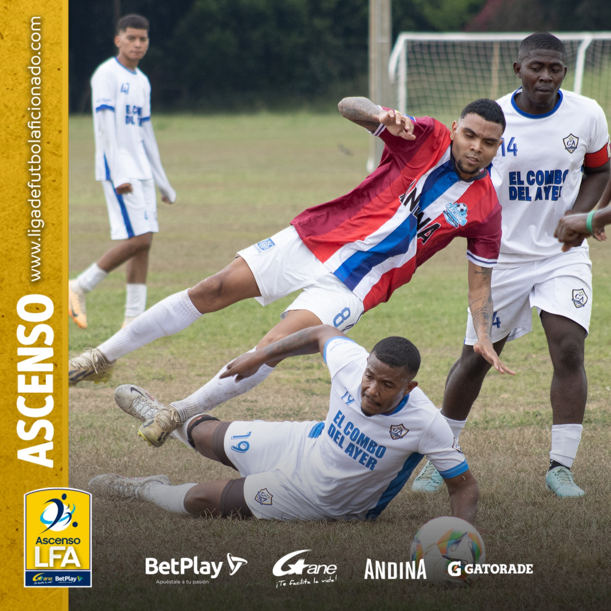
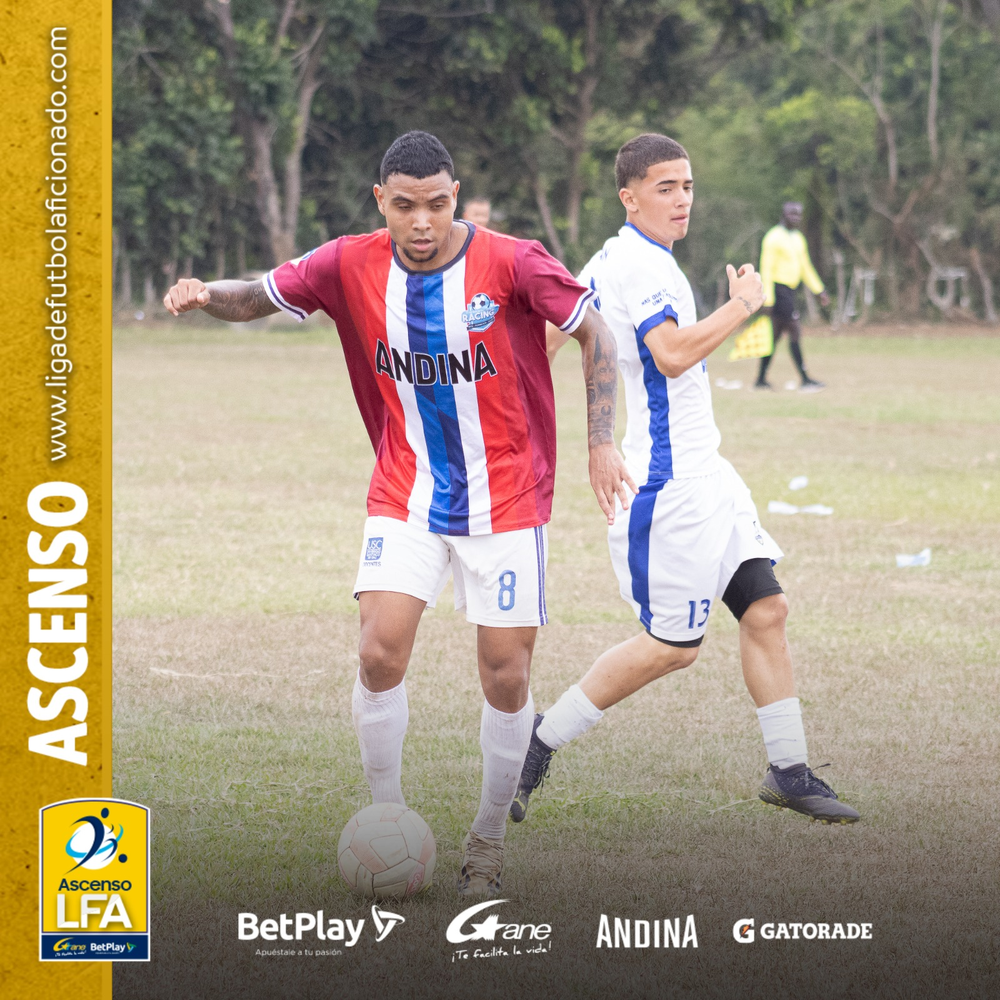
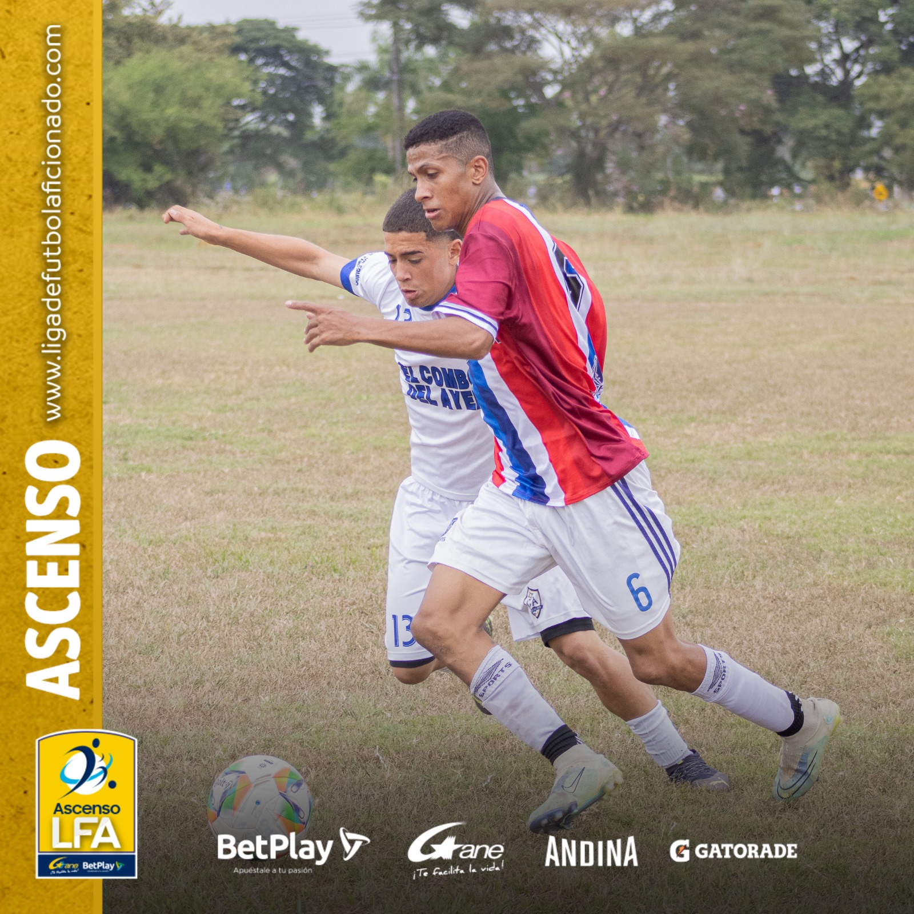
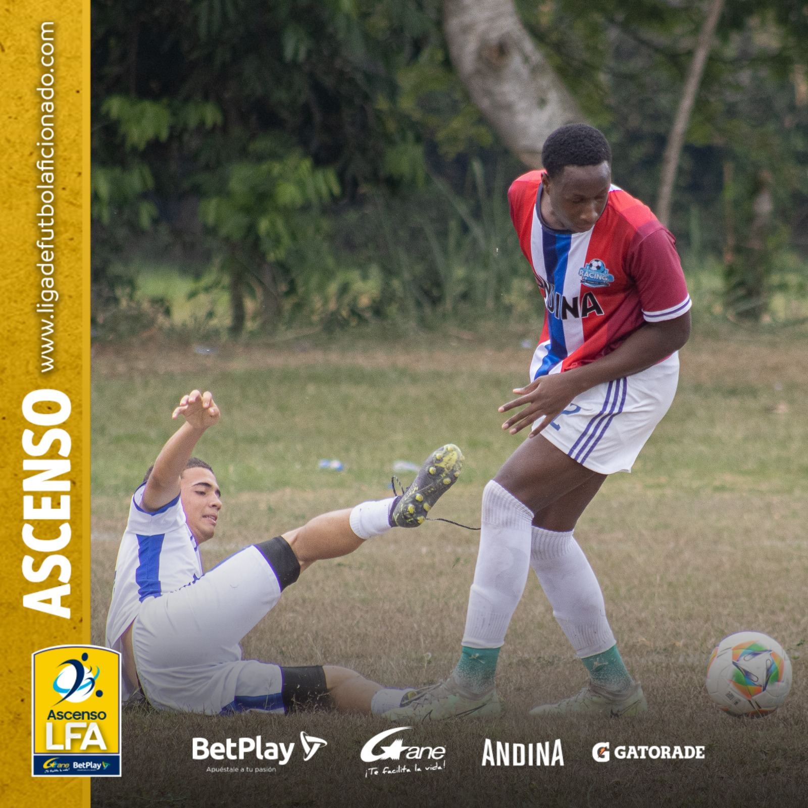
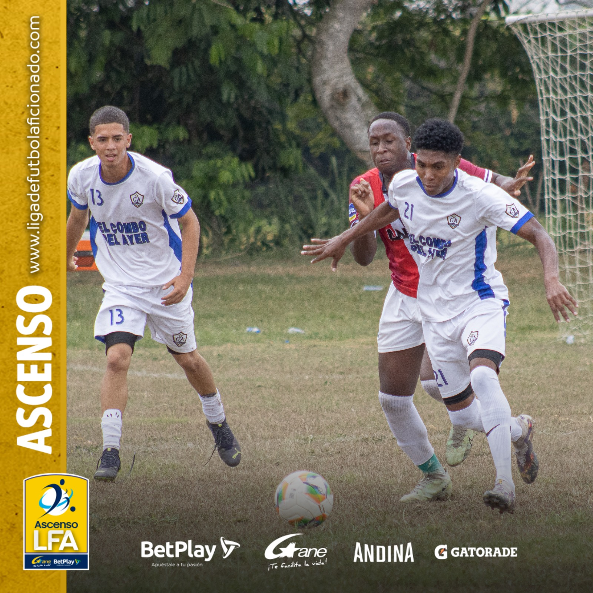
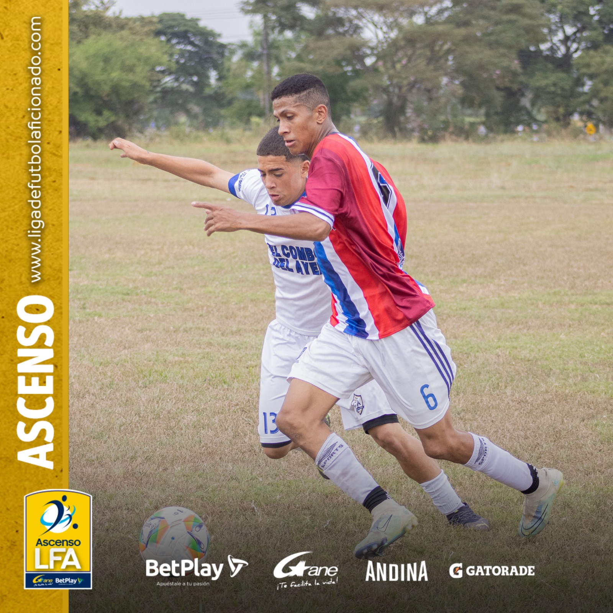
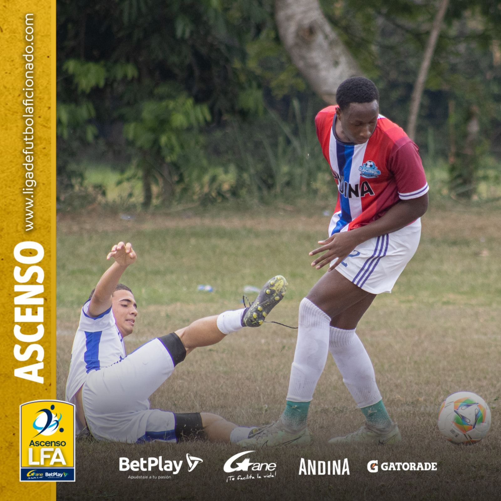
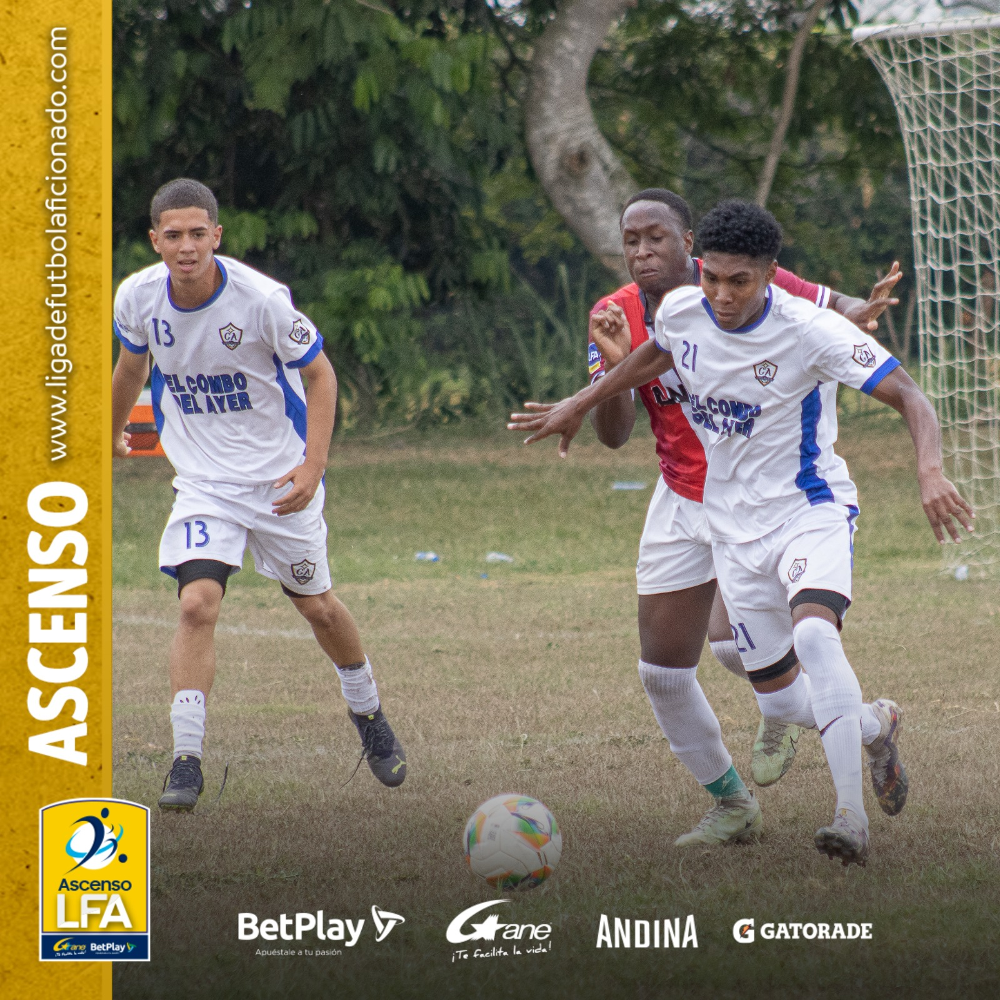
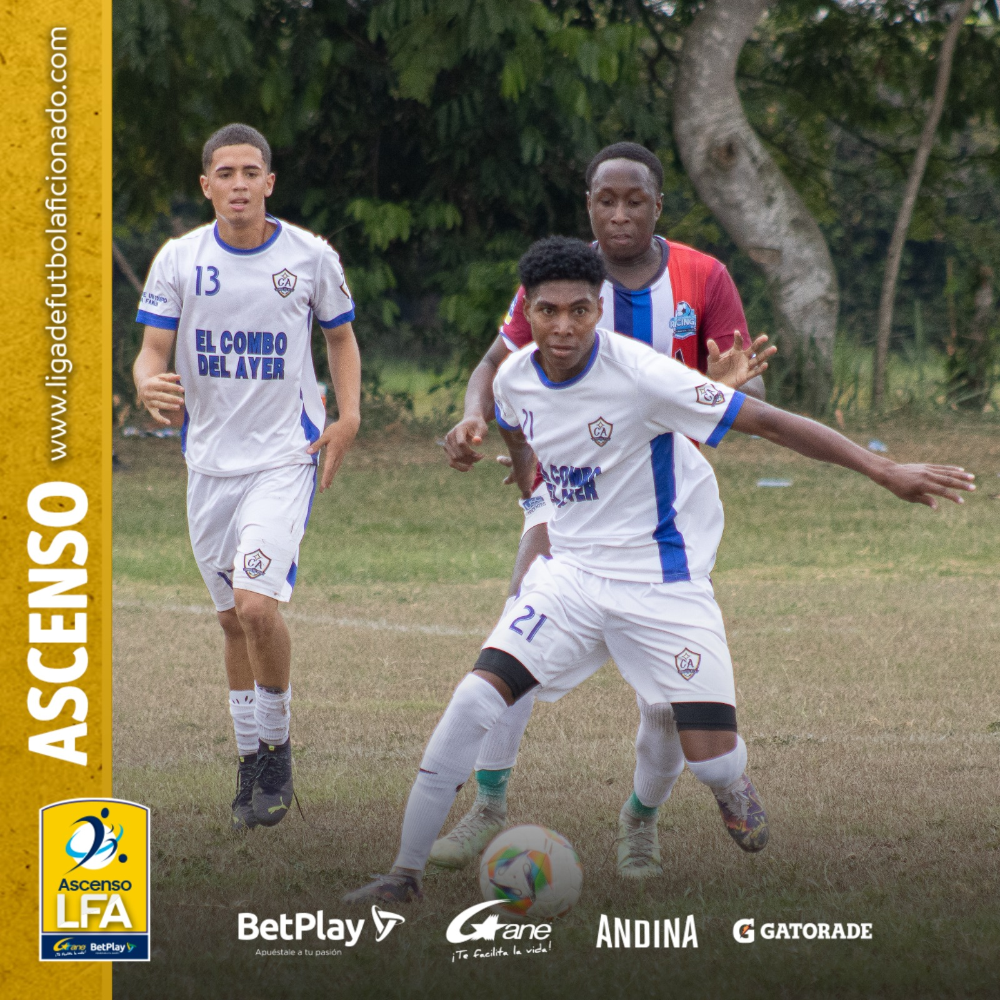
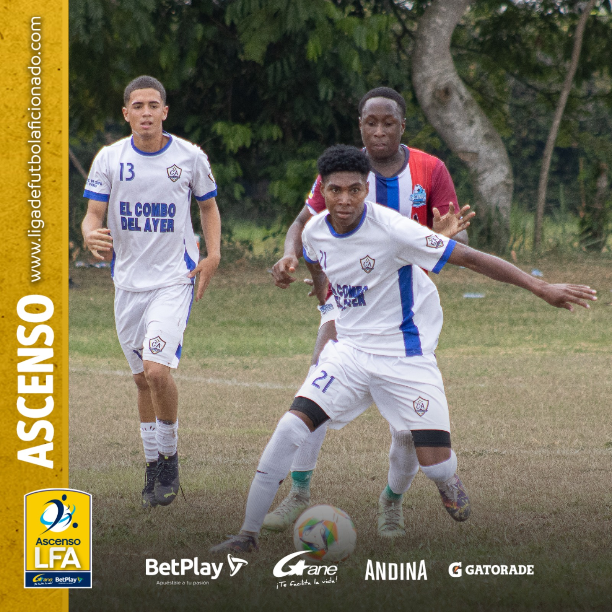

CAMPEÓN LFA CATEGORIA C
En un emocionante y dramático encuentro se disputó la final de la categoria C de la LFA contra el equipo Milanso FC, un importante rival, el cual nos obligó a demostrar toda nuestra jerarquía, tras irse adelante por dos goles en la primera parte, colocándonos en una dicicil situación, pero gracias a una destacada actuación de todo el equipo, especialmente Kevin Paloméque, anotador de los dos goles del empatey de Jhon Mina, atajando dos penales en la definición, logramos imponernos y levantar el tan anhelado trofeo


ASÍ MARCHA EL COMBO!
LFA 2024 ascenso
Cumplida la fecha 19 nos resignamos la posibilidad de entrar en el selecto grupo de los ocho finalistas del torneo ascenso LFA, faltando dos fechas no existen posibilidades para clasificar. No ha sido el resultado que esperábamos al iniciar, ya que nuestros objetivos eran altos, sin embargo las situaciones extradeportivas mellaron la calidad de la plantilla y nos ha costado volver al nivel con el que terminamos el año anterior, caras nuevas han aportado un grano de arena importante, sin embargo el proceso de engranaje ha sido complejo. Esperamos terminar el torneo de la mejor manera y llenarnos de la mejor energía para la próxima temporada y decir de nuevo "Siempre estuvimos aqui".


TABLA DE CLASIFICACION

Algunas imágenes de un bonito partido fecha 18 contra un excelente rival, en donde en un partido muy complejo al jugarse con 1 hombre menos durante la segunda mitad, caímos 0 - 2 Contra el equipo Córdiba FC
  





 


Copa La Roca 2024
Ya está definido nuestro rival para disputar la semifinal del torneo Copa La Roca, será un viejo conocido, con quienes ya hemos disputados encuentros muy intensos, se trata del La Banda FC, esperamos poder tener una gran tarde y dar unpaso más hacia la final ante un encopetado rival.
Con una categórica vitoria, el Combo Del Ayer FC dió un importante paso para clasificarse a la semifinal del torneo Copa La Roca el pasado lunes 19 de agosto, imponiendose con un marcador 6 - 1 frente a su rival Real Horizonte FC, destacándose triplete del capitan Walter Lourido "W", felicidades por tan merecido triunfo y por tan excelente actuacińo


Destacamos una de nuestras presentaciones en la etapa cuartos de final del torneo Copa Trinche 2022, en donde se definió el paso a semifinales por tanda de tiros desde el punto penal contra el equipo Macondo FC, en un duro encuentro que terminó empatodo en los 90 minutos 1 - 1
SOBRE EL COMBO DEL AYER
El Combo Del Ayer Fútbol Club, es un proyecto deportivo que nació desde el año 1989 cuando un grupo de jóvenes amigos de los barrios Bello Horizonte y Sindical en la ciudad de Cali, formaron un equipo de microfútbol, con el nombre de Bello Sindi FC, incursionaron en competiciones de microfútbol en diferentes torneos de la comuna 12, destacándose como el primer campeón infantil en el barrio Sindical, el campeón en el tornero de La Tortuga y el sub campeón del torneo Cien Palos. Incursionó como equipo de futbol en el torneo abierto de Comfamiliar Pance, en donde a pesar de no lograr una gran figuración, forjó las bases de lo posteriormente se consolidaría como proyecto deportivo Combo del Ayer Fútbol Club, bajo el liderazgo constante de Jhon Jairo Lourido, a partir de allí se ha trazado un camino de competencias en los diferentes torneos de la ciudad de Cali como Copa La Roca, Torneo abierto Comfenalco, Copa Trinche Rivalo y Liga de Futbol Aficionado LFA, de la cual se cornó CAMPEON de la catagoría C, logranndo el ascender a la siguiente categoría "Ascenso LFA", poniendose ad portas de lograr llegar a la máxima categoría para equipos de futbol aficionado en la ciudad de Cali